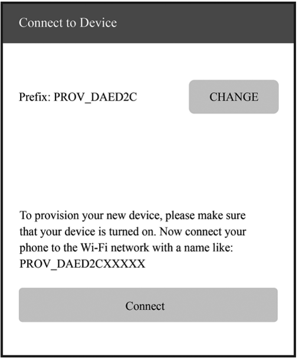
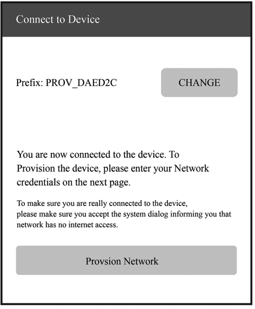
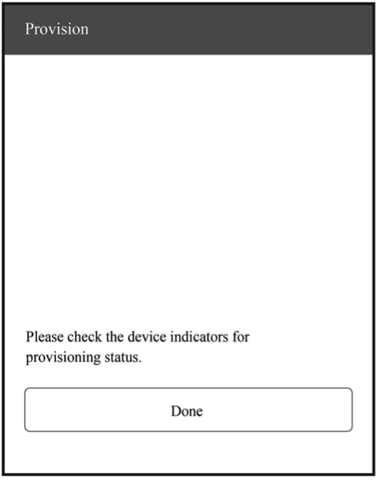
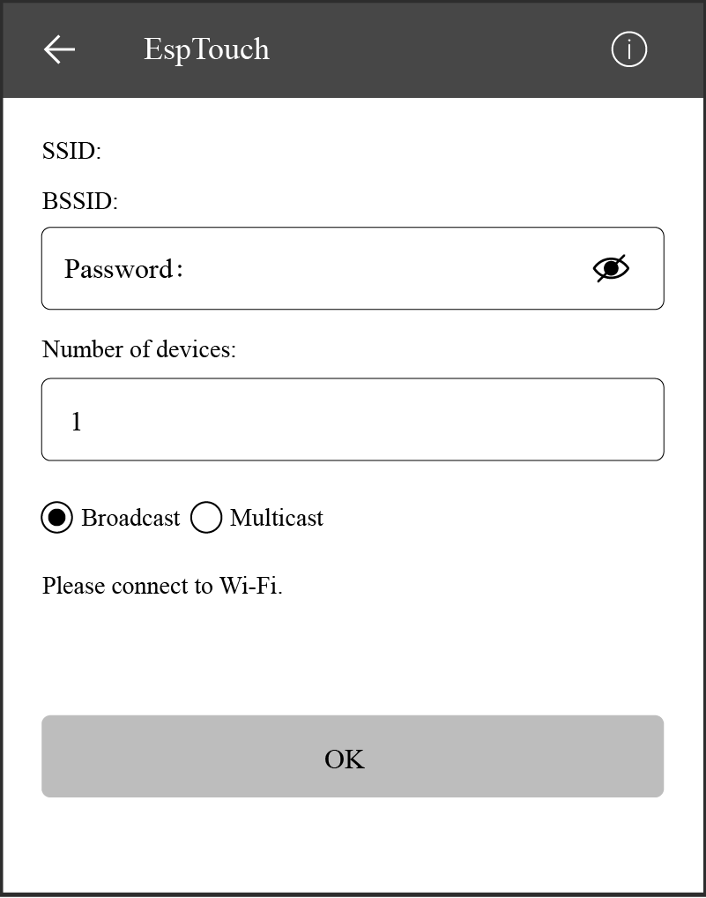
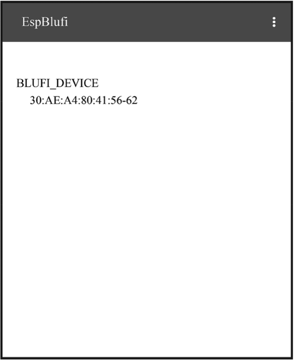
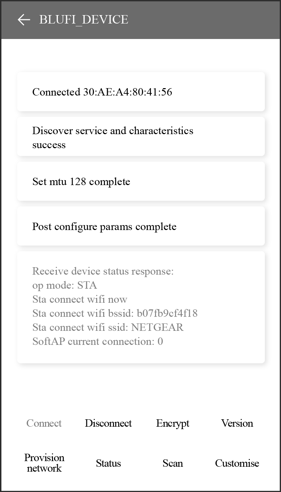

The wifi_provisioning components provided by ESP32-C3 can transmit
SSID and password of the AP through SoftAP or Bluetooth LE, and then use
them to connect to the AP.
Once the provisioning service is complete, the main application will
release the resources for provisioning and start executing its own
logic. There are two ways to do this. The simpler way is to call
wifi_prov_mgr_wait(). See the code below:
//Wait for the provisioning service to finish
wifi_prov_mgr_wait();
//Release the resources for provisioning
wifi_prov_mgr_deinit();
The other way is to use the callback function of the event. See the code
below:
static void event_handler(void* arg, esp_event_base_t event_base,
int event_id, void* event_data)
{
if (event_base == WIFI_PROV_EVENT && event_id == WIFI_PROV_END) {
//Release the resources for provisioning upon completion
wifi_prov_mgr_deinit();
}
}
To get started, install ESP SoftAP Provisioning on your phone. Next,
turn on the Wi-Fi and power on the device. Ensure that the output log by
the serial port (see Figure 7.34) contains information beginning with
PROV_.
Open the application on your phone and tap "Start Provisioning". Then
you will find the device PROV_DAED2CXXXXX on the screen (refer to Figure
7.35).

Figure 7.35. Startup
Connection
Tap "Connect" to navigate to the Wi-Fi setting interface. Select to
connect the device PROV_DAED2CXXXXX. If connected, you will see the
screen as Figure 7.36.

Figure 7.36. SoftAP connection
The output log is as follows:
I (102906) wifi:station: 88:40:3b:40:c1:13 join, AID=1, bgn, 40U
I (103056) esp_netif_lwip: DHCP server assigned IP to a station, IP is: 192.168.4.2
I (124286) wifi:station: 88:40:3b:40:c1:13 leave, AID = 1, bss_flags is 134259, bss:0x3fca7844
I (124286) wifi:new: <1,0>, old: <1,1>, ap: <1,1>, sta: <0,0>, prof:1
I (149036) wifi:new: <1,1>, old: <1,0>, ap: <1,1>, sta: <0,0>, prof:1
I (149036) wifi:station: 88:40:3b:40:c1:13 join, AID=1, bgn, 40U
I (149246) esp_netif_lwip: DHCP server assigned IP to a station, IP is: 192.168.4.2
Provisioning
Tap "Provision Network" to enter the provisioning screen shown in Figure
7.37.
Figure 7.37. Provisioning
Completion
Tap "Provision" to enter the completion screen shown in Figure 7.38.

Figure 7.38. Completion
The output log is as follows:
I (139471) app: Received Wi-Fi credentials
SSID : myssid
Password : mypassword
.
.
.
I (144091) app: Connected with IP Address:192.168.50.31
I (144091) esp_netif_handlers: sta ip: 192.168.50.31, mask: 255.255.255.0, gw: 192.168.50.1
I (144091) wifi_prov_mgr: STA Got IP
I (144101) app: provisioningsuccessful
I (144101) app: Hello World!
I (145101) app: Hello World!
.
.
.
I (146091) wifi_prov_mgr: Provisioning stopped
I (146101) app: Hello World!
I (147101) app: Hello World!
I (148101) app: Hello World!
The SmartConfig component provided by ESP32-C3 can transmit the SSID and
password of the AP through promiscuous mode, and then use them to
connect to the AP.
This module takes care of Wi-Fi connection, disconnection, reconnection,
scanning, etc., as detailed in the sections before. Additionally, when
the WIFI_EVENT_STA_START event occurs, it will also create a
SmartConfig task.
NETIF event handling
This module helps acquire the IP address. Details are provided in the
sections before. When the IP_EVENT_STA_GOT_IP event occurs, the
connection flag will be set.
SmartConfig event handling
The received request determines how the event is handled and processed.
SmartConfig events are shown in Table 7.6.
Table 7.6. SmartConfig events
Event
Description
SC_EVENT_SCAN_DONE
Scan to obtain the information about nearby APs
SC_EVENT_FOUND_CHANNEL
Get the channel of the target AP
SC_EVENT_GOT_SSID_PSWD
Enter STA mode to get the SSID and password of the target AP
As demonstrated in the code above, a SmartConfig task primarily performs
three functions. First, it sets the SmartConfig type, such as ESP-TOUCH
and ESP-TOUCH V2. Second, after the configuration, it enables
SmartConfig by calling esp_smartconfig_start(). Finally, it checks the
event group in a loop. Upon receiving the SC_EVENT_SEND_ACK_DONE
event, it stops SmartConfig by calling esp_smartconfig_stop().
Main program
It creates an event group to set the flag when a relevant event is
triggered, and then initialises Wi-Fi.
To get started, install Espressif Esptouch on your phone. Then turn on
the Wi-Fi and power on the device. You will see the output log by the
serial port as follows:
I (1084) wifi:mode : sta (30:ae:a4:80:65:7c)
I (1084) wifi:enable tsf
I (1134) smartconfig: SC version: V3.0.1
I (5234) wifi:ic_enable_sniffer
I (5234) smartconfig: Start to find channel...
I (5234) smartconfig_example: Scan done
Connect your phone to Wi-Fi, and enter the password to start
configuration. The SmartConfig interface is shown in Figure 7.39.

Figure 7.39. SmartConfig configuration
The output log is as follows:
I (234592) smartconfig: TYPE: ESPTOUCH
I (234592) smartconfig: T|PHONE MAC:68:3e:34:88:59:bf
I (234592) smartconfig: T|AP MAC:a4:56:02:47:30:07
I (234592) sc: SC_STATUS_GETTING_SSID_PSWD
I (239922) smartconfig: T|pswd: 123456789
I (239922) smartconfig: T|ssid: IOT_DEMO_TEST
I (239922) smartconfig: T|bssid: a4:56:02:47:30:07
I (239922) wifi: ic_disable_sniffer
I (239922) sc: SC_STATUS_LINK
I (239932) sc: SSID:IOT_DEMO_TEST
I (239932) sc: PASSWORD:123456789
I (240062) wifi: n:1 0, o:1 0, ap:255 255, sta:1 0, prof:1
I (241042) wifi: state: init -> auth (b0)
I (241042) wifi: state: auth -> assoc (0)
I (241052) wifi: state: assoc -> run (10)
I (241102) wifi: connected with IOT_DEMO_TEST, channel 1
I (244892) event: ip: 192.168.0.152, mask: 255.255.255.0, gw: 192.168.0.1
I (244892) sc: WiFi Connected to ap
I (247952) sc: SC_STATUS_LINK_OVER
I (247952) sc: Phone ip: 192.168.0.31
I (247952) sc: smartconfig over
Wi-Fi event handling: taking care of Wi-Fi connection,
disconnection, reconnection, scanning, etc., as detailed in the
sections before.
NETIF event handling: acquiring IP address. Details are provided
in the sections before.
BluFi event handling: determined by the received request. BluFi
events are shown in Table 7.8.
Table 7.8. BluFi events
Event
Description
ESP_BLUFI_EVENT_INIT_FINISH
Initialise BluFi features, name the device, and send specified broadcast data
ESP_BLUFI_EVENT_DEINIT_FINISH
Handle deinit configuration events
ESP_BLUFI_EVENT_BLE_CONNECT
Connect to Bluetooth LE and put the device into safe mode
ESP_BLUFI_EVENT_BLE_DISCONNECT
Set Bluetooth LE to disconnect and reconnect
ESP_BLUFI_EVENT_SET_WIFI_OPMODE
Put ESP32-C3 into operating mode
ESP_BLUFI_EVENT_REQ_CONNECT_TO_AP
Disconnect from the original Wi-Fi and connect to the specified Wi-Fi
ESP_BLUFI_EVENT_REQ_DISCONNECT_FROM_AP
Disconnect from the AP currently connected to ESP32-C3
ESP_BLUFI_EVENT_REPORT_ERROR
Send error messages
ESP_BLUFI_EVENT_GET_WIFI_STATUS
Get Wi-Fi status, including the current Wi-Fi mode and whether it is connected
ESP_BLUFI_EVENT_RECV_SLAVE_DISCONNECT_BLE
Notify BluFi that the GATT connection is closed
ESP_BLUFI_EVENT_RECV_STA_BSSID
Enter STA mode and get the BSSID of the target AP
ESP_BLUFI_EVENT_RECV_STA_SSID
Enter STA mode and get the SSID of the target AP
ESP_BLUFI_EVENT_RECV_STA_PASSWD
Enter STA mode and get the password of the target AP
ESP_BLUFI_EVENT_RECV_SOFTAP_SSID
Enter SoftAP mode and get the custom AP SSID
ESP_BLUFI_EVENT_RECV_SOFTAP_PASSWD
Enter SoftAP mode and get the custom AP password
ESP_BLUFI_EVENT_RECV_SOFTAP_MAX_CONN_NUM
Set the maximum number of connected devices in SoftAP mode
ESP_BLUFI_EVENT_RECV_SOFTAP_AUTH_MODE
Enter authentication mode in SoftAP mode
ESP_BLUFI_EVENT_RECV_SOFTAP_CHANNEL
Set the channel in SoftAP mode
ESP_BLUFI_EVENT_GET_WIFI_LIST
Obtain the SSID list, channel, and STA MAC address scanned over the air
ESP_BLUFI_EVENT_RECV_CUSTOM_DATA
Print the received data and trim it to fit the application
Main program: initialising Wi-Fi, initialising and enabling
Bluetooth controller, initialising and enabling Bluetooth protocol,
obtaining Bluetooth address and BluFi version, processing Bluetooth
GAP events, and creating BluFi events.
To get started, install EspBlufi on your phone. Turn on the Wi-Fi and
power on the device. You will see the output log by the serial port as
follows:
I (516) phy_init: phy_version 500,985899c,Apr 19 2021,16:05:08
I (696) wifi:set rx active PTI: 0, rx ack PTI: 12, and default PTI: 1
I (908) wifi:mode : sta (30:ae:a4:80:41:55)
I (908) wifi:enable tsf
W (706) BTDM_INIT: esp_bt_controller_mem_release not implemented, return OK
I (706) BTDM_INIT: BT controller compile version [9c99115]
I (716) coexist: coexist rom version 9387209
I (726) BTDM_INIT: Bluetooth MAC: 30:ae:a4:80:41:56
I (746) BLUFI_EXAMPLE: BD ADDR: 30:ae:a4:80:41:56
I (1198) BLUFI_EXAMPLE: BLUFI VERSION 0102
I (1198) BLUFI_EXAMPLE: BLUFI init finish
Open the application on your phone and pull down to refresh. You will
see the information about nearby Bluetooth devices on the screen as
shown in Figure 7.40.

Figure 7.40. EspBlufi startup
Connection
Select the ESP32-C3 module BLUFI_DEVICE to get details about the device.
Tap "Connect" to connect with Bluetooth. If connected, you will see the
interface as Figure 7.41.
Figure 7.41. Bluetooth connected
The output log is as follows:
I (32736) BLUFI_EXAMPLE: BLUFI ble connect
Provisioning
Tap "Provision network" in Figure 7.41 to enter the provisioning
interface shown in Figure 7.42.
Figure 7.42. Provisioning
STA connection
Tap "OK" in Figure 7.42 to configure the network. If the configuration
succeeds, you will see the STA connected interface shown in Figure 7.43.
Details about STA connection in Wi-Fi mode will be displayed at the
bottom of the screen, including the BSSID and SSID of the AP and the
connection status.

Figure 7.43. STA connected
The output log is as follows:
I (63756) BLUFI_EXAMPLE: BLUFI Set WIFI opmode 1
I (63826) BLUFI_EXAMPLE: Recv STA SSID NETGEAR
I (63866) BLUFI_EXAMPLE: Recv STA PASSWORD 12345678
I (63936) BLUFI_EXAMPLE: BLUFI requset wifi connect to AP
I (65746) wifi:new: <8,2>, old: <1,0>, ap: <255,255>, sta: <8,2>, prof:1
I (66326) wifi:state: init -> auth (b0)
I (67326) wifi:state: auth -> init (200)
I (67326) wifi:new: <8,0>, old: <8,2>, ap: <255,255>, sta: <8,2>, prof:1
I (69516) wifi:new: <10,0>, old: <8,0>, ap: <255,255>, sta: <10,0>, prof:1
I (69516) wifi:state: init -> auth (b0)
I (69566) wifi:state: auth -> assoc (0)
I (69626) wifi:state: assoc -> run (10)
I (69816) wifi:connected with NETGEAR, aid = 1, channel 10, BW20, bssid = 5c:02:14:03:a5:7d
I (69816) wifi:security: WPA2-PSK, phy: bgn, rssi: -48
I (69826) wifi:pm start, type: 1
I (69826) wifi:set rx beacon pti, rx_bcn_pti: 14, bcn_timeout: 14, mt_pti: 25000, mt_time: 10000
I (69926) wifi:BcnInt:102400, DTIM:1 W (70566) wifi:idx:0 (ifx:0, 5c:02:14:03:a5:7d), tid:0, ssn:2, winSize:64
I (71406) esp_netif_handlers: sta ip: 192.168.31.145, mask: 255.255.255.0, gw:192.168.31.1